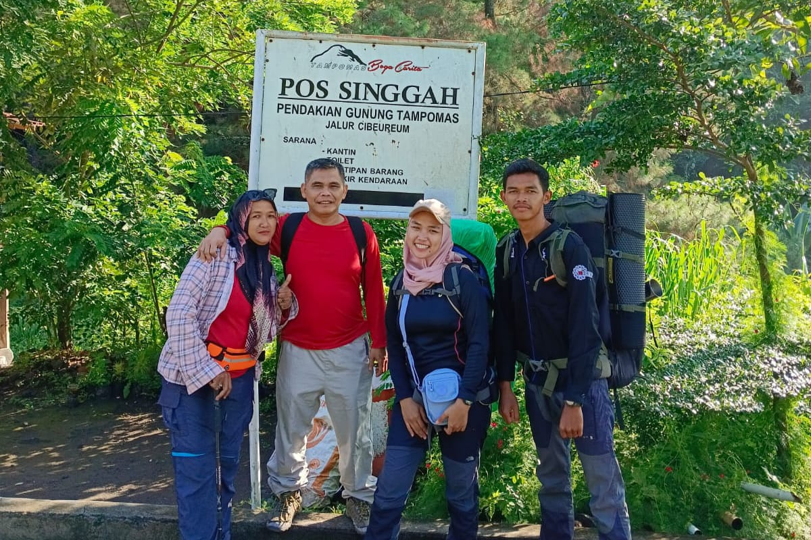
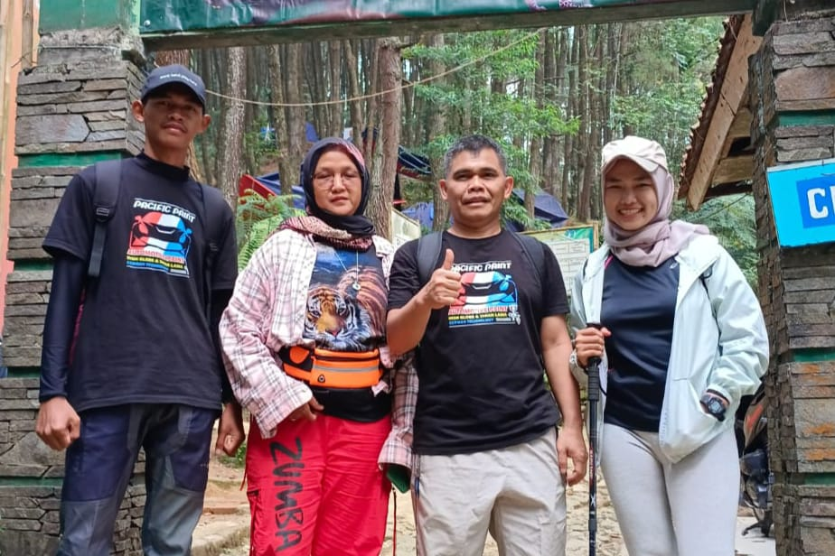
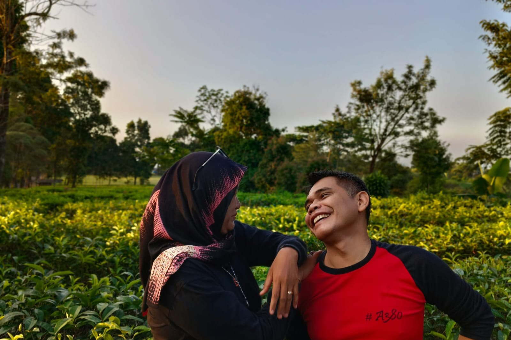

Ucapan ulang tahun untuk pria yang membuat hatiku berdebar lebih cepat setiap hari. Terima kasih telah menjadi teman, sahabat, dan suami yang luar biasa. Selamat ulang tahun, cinta!
-Your Wife-

Jangan Berhenti Untuk Naik Gunung Karena Gunung Selalu Menjadi Tempat Bahagia Untuk Kita.

Tetapi Jangan Memaksakan Naik Gunung Ketika Kondisi Tidak Mendukung, Karena Gunung Gapernah Pindah.

Akan Selalu Ada Episode MDPL Selanjutnya.
Tidak pernah ada kata "Jangan" ketika anaknya sudah ada di usia dewasa karena bapak selalu percaya & yakin bahwa apa yang sudah jadi keputusan anaknya adalah yang terbaik